Operation Ded Cat is on a mission of a quantum nature to raise awareness & understanding of OP_CAT.
@OperationDedCat
Ded or alive?
EVERYTHING YOU NEED TO KNOW ABOUT OP_CAT
OP_CAT has the power to change the Bitcoin eco-system and indeed the financial system as we know it. You may well
have seen this term OP_CAT proliferated throughout social media in recent times, but what is OP_CAT? This article
is going to break down everything you need to know including an analysis of the benefits and risks, while
exploring what a future with OP_CAT may entail

Why Does That Matter? What are the Benefits of OP_CAT?
Enabling more complex transactions on Bitcoin would allow for a host of new creative use-cases throughout the
eco-system. It would be fair to say that Bitcoin has performed well on comparatively basic transactions, while
also having served exceptionally well as a store of value. It’s function as ‘money’ while admirable could be
improved to meet the scalability demands that the everyday usage of Bitcoin would require. Essentially OP_CAT
has the power to act as a conduit to enhance transaction efficiency via a more scalable solution, where gas fees
and slow speeds could be significantly tempered, once the right solutions are enabled by OP_CAT.
Therefore, we see how OP_Cat has the potential to not only improve Bitcoin but the traditional financial system
itself. While some may argue that there are already solutions such as the lightning network, the success of such
solutions is questionable (a debate for another day), whereas OP_CAT has a huge amount of potential to arguably
streamline a much more effective solution.
Scalability via a layer 2 is just one potential improvement as the result of OP_CAT, an incalculable array of
innovative products and possibilities could be enabled within the Bitcoin eco-system such as: decentralized
exchanges, Bitstream’s decentralized streaming, atomic swaps, conditional transactions, bridging solutions,
cross-chain interoperability, and more.
To enable such a vast array of innovative functionality is a testament to the power of OP_CAT. With OP_CAT
potentially opening the floodgate of innovation, one could argue this would further enhance the actual value
proposition of Bitcoin itself, creating an economic powerhouse of creativity. In other words, OP_CAT is an agent
to bring magic into the Bitcoin eco-system.
How Does OP_CAT do This? – Let’s get Technical
Going back to the basics we touched upon earlier, concatenation is essentially a process whereby two values are
displaced from a stack and then linked together, to then push the concatenated value to the top of the stack.
Stacks are essentially storage places when dealing with scripts, i.e., conditions allowing for the safety and
security of Bitcoin spending within a decentralized system. OP_CAT allows for the emulation of covenants,
thereby producing changes which can be made in the scripting.
This is all very impressive considering that OP_CAT has only around 9 or 10 lines of code (dependent upon
source), while outshining almost all others in terms of the power it has, which can of course be leveraged for
creative use cases.
To enable OP_CAT would also require a soft fork, i.e., a change in the ‘rules’ of the Bitcoin protocol. This
would require a BIP (Bitcoin Improvement Proposal - a means of submitting these changes) as well. It’s worth
noting that a soft fork is substantially less disruptive than a hard fork, which would essentially result in
the creation of a second blockchain with new rules, requiring an update by all miners. Soft forks on the other
hand usually bring about important changes with less disruption but still require careful consideration.
What Risks Does OP_CAT Present?
OP_CAT was initially active on Bitcoin but was removed in 2010 by Satoshi Nakamoto due to security concerns.
Clearly, it’s important to understand what concerns might have been associated with OP_CAT.
Spam and denial of service attacks were commonly cited problems thought to be a cause of concern as a result of
enabling OP_CAT. However, it’s worth mentioning this was at a time when there were exponential stack elements.
This is no longer a concern given that we now have tapscript (a previous script upgrade allowing for more
features in an efficient manner). Tapscript will not allow more than 520 bytes in a stack element size without
OP_CAT failing, thereby ensuring security when using OP_CAT.
Other more abstract arguments are made for OP_CAT being a debasement from some of the core philosophical
principles of Bitcoin.
Weighing it up; What’s the Verdict?
While expressing valid concerns are a natural part of this process for both understanding and evaluating these
decisions, it’s important to place these concerns from the past in the context of how cryptography has
evolved. The security concerns present at the time of removing OP_CAT in 2010 are now largely obsolete.
Furthermore, rising voices have made valid arguments that OP_CAT could actually improve security.
Ultimately, it’s always a conundrum trying to balance decentralization, security, and scalability. Weighing up
the plethora of innovative solutions against the largely outdated security concerns, it is clear that serious
consideration in favour of a BIP enabling OP_CAT makes a lot of sense. It may perhaps be worth leaving you
with some food for thought based upon the words by an accomplished individual named Robin Linus, which have
recently resounded throughout the Bitcoin community: ‘OP_CAT can be used as a tool to liberate and to protect
people.’